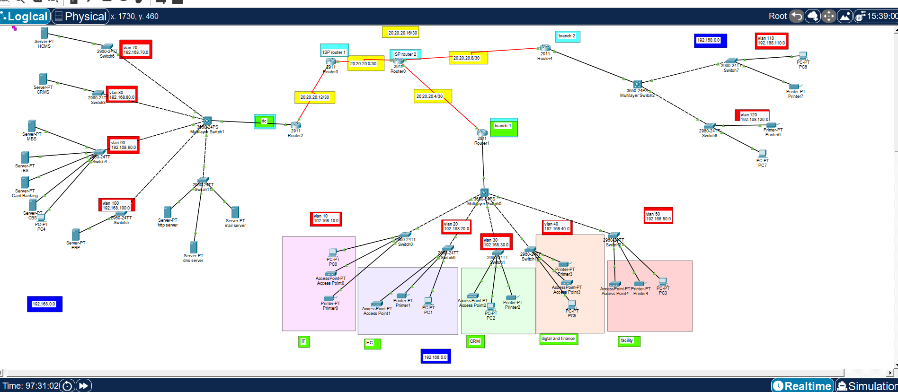
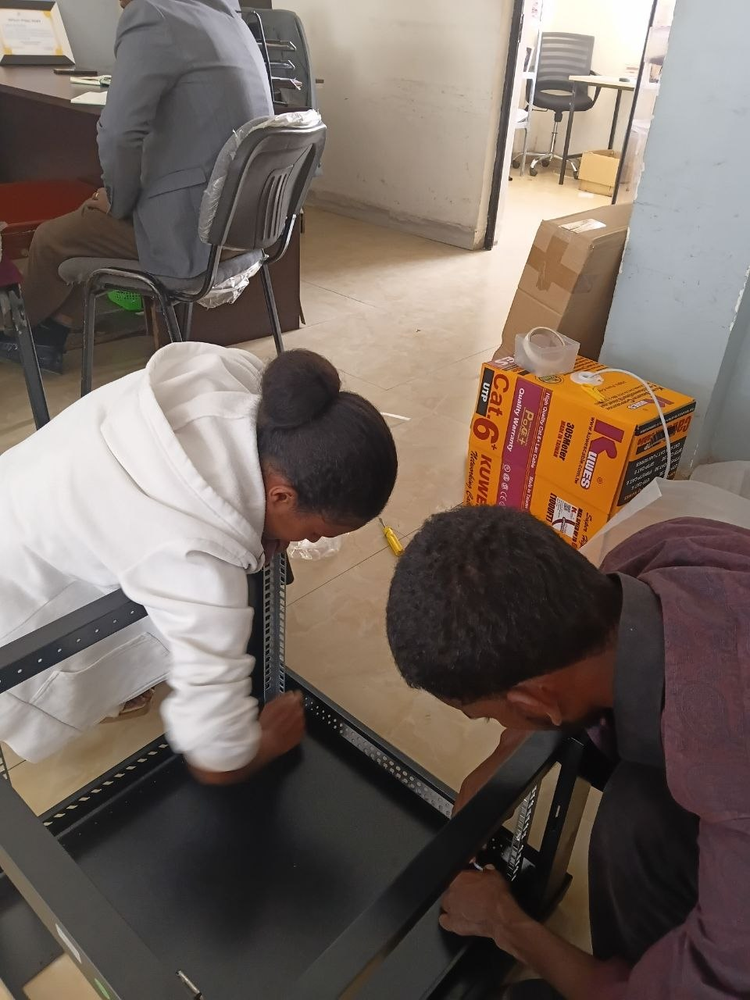
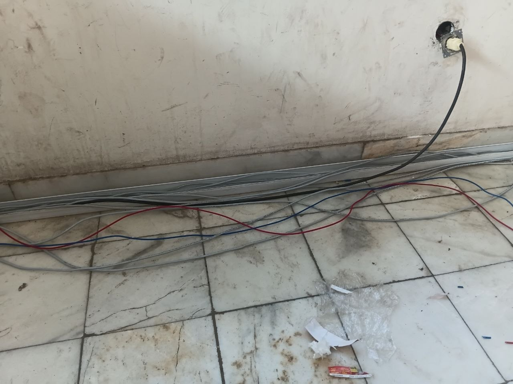
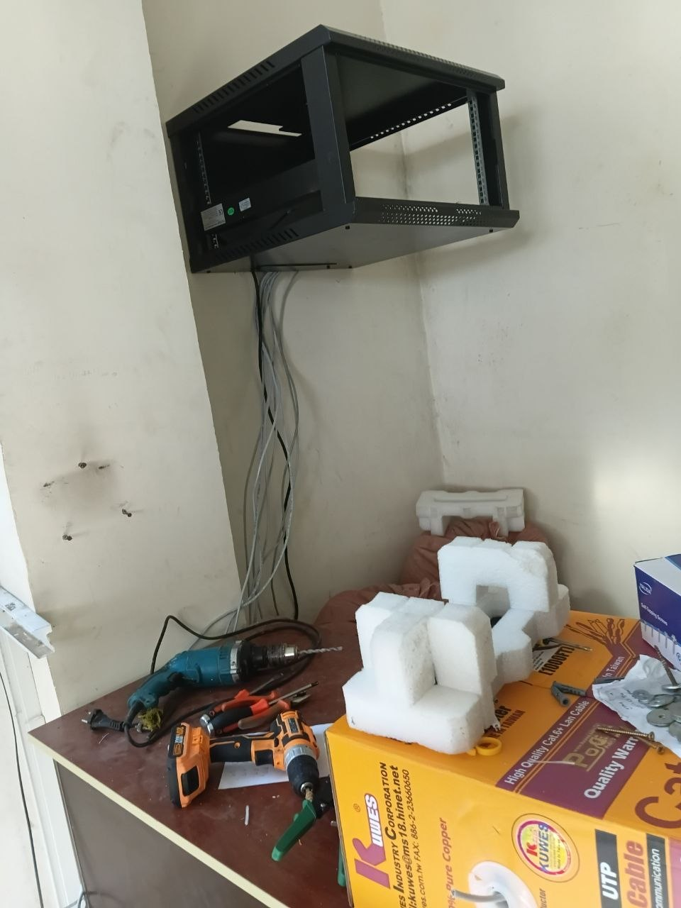
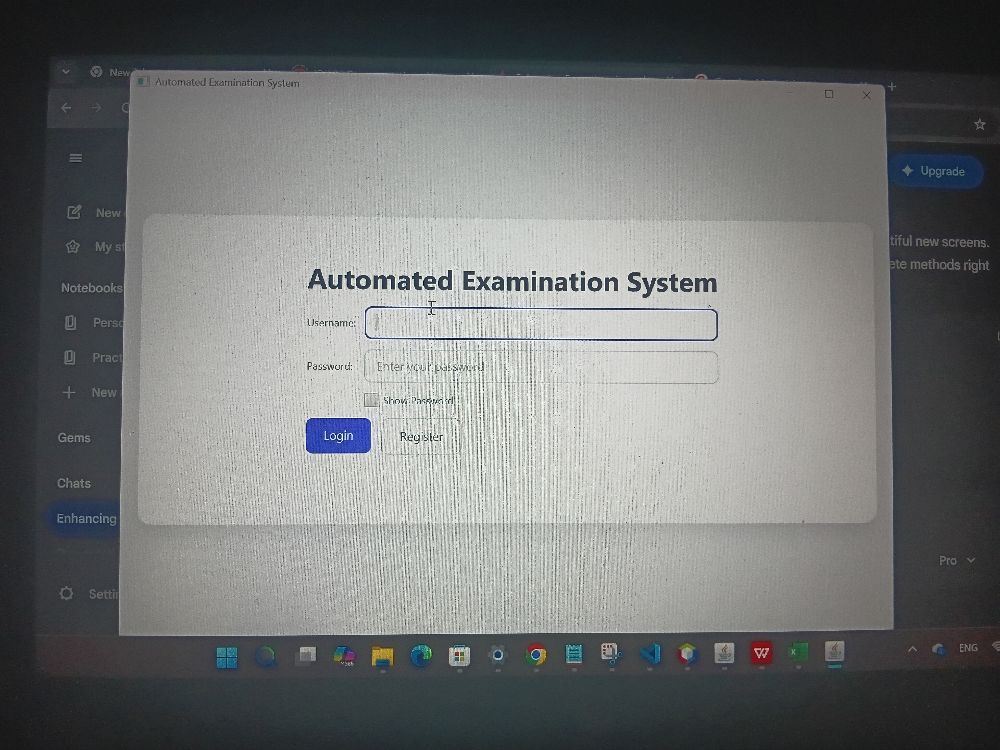

Information Technology Student — Bahir Dar University
Alex Nega
4th-Year Information Technology Student
Networking & IT Infrastructure
Frontend Development · Cybersecurity · Software Development · Mobile Development
I'm an Information Technology student focused on networking and IT infrastructure, with practical experience in network design, simulation, installation, and infrastructure organization — supported by skills in frontend development, cybersecurity, software development, and IT support.
I am a 4th-year Information Technology student at Bahir Dar University / Bahir Dar Institute of Technology with a strong interest in networking and IT infrastructure.
My practical and academic work includes designing and simulating network environments, working with network infrastructure concepts, and participating in physical rack installation and organization during an internship at Tsedey Bank. Alongside this, I develop software and mobile applications.
I have also completed cybersecurity training, multiple eSHE courses, and technical training in mobile phone service and repair.
02
Technical Focus
Networking & IT Infrastructure
Network Design
Network Simulation
Network Topology
Routing & Switching Concepts
Network Segmentation
Network Security Concepts
Infrastructure Planning
Rack Installation
Rack Organization
Cable Management
Physical Network Infrastructure
Frontend Development
HTML
CSS
JavaScript
Software Development
Java
C++
C#
PHP
Cybersecurity
Network Security Concepts
Access Control Concepts
Cybersecurity Fundamentals
ISC2 Training
Mobile Development
Mobile Application Development
Campus Helper / Reminder App
IT Support
Mobile Phone Service & Repair
Hardware Troubleshooting
Microsoft Word
Microsoft Excel
Creative / Digital
Video Editing — CapCut
03
Networking & IT Infrastructure
Designing, simulating, organizing, and understanding practical IT infrastructure environments.
Case Study — Academic / Simulated Project
Tsedey Bank — Secure Network Design & Simulation
I designed and simulated a secure network environment covering topology, segmentation, and access control concepts, modeled on a bank-style infrastructure scenario.

Challenge
Model a segmented, access-controlled network for a bank-style environment.
Design
Planned topology and infrastructure layout, including segmentation between zones.
Configuration / Simulation
Simulated the network environment to test routing, switching, and segmentation concepts.
Security
Applied access control and network security concepts within the design.
Result / Learning
Strengthened understanding of secure network design in a practical, bank-style scenario.
During my internship at Tsedey Bank, I participated in practical IT infrastructure activities, including rack installation, rack organization, cable management, and other physical network infrastructure work within a real IT environment.
Rack InstallationRack OrganizationCable ManagementPhysical Network InfrastructurePractical IT Environment Exposure
Academic / Simulated Networking
Network design and simulation work completed as part of coursework and independent study.
Hands-On Internship Experience
Physical infrastructure work carried out on-site during the Tsedey Bank internship.

Rack Installation

Cable Management

Internship Work
05
Additional Network Design Projects
Enterprise Network Design
EnvironmentEnterprise network environment designed and simulated as an academic/practical networking project, including multiple network segments, VLAN-based departmental organization, routers, multilayer switching, servers, and interconnected network areas.
ObjectiveTo design and simulate a structured enterprise network demonstrating practical network organization, VLAN segmentation, inter-network connectivity, infrastructure planning, and communication between different network areas.
Key LearningI gained practical understanding of enterprise network topology, VLAN-based network organization, routing, multilayer switching, infrastructure planning, and network simulation.
Hotel Network Design
EnvironmentMulti-floor hotel network environment designed and simulated as an academic/practical networking project, with separate departmental network segments, server infrastructure, wireless access, and interconnected floors.
ObjectiveTo design and simulate a structured hotel network that provides organized connectivity for different departments and service areas while demonstrating VLAN segmentation, network infrastructure planning, and inter-floor communication.
Key LearningI gained practical understanding of how network infrastructure can be organized across multiple floors and departments, including VLAN segmentation, routing, wireless connectivity, server connectivity, and network planning.
Other Network Design
EnvironmentMulti-site organizational network environment designed and simulated as an academic/practical networking project, consisting of a central network environment and interconnected branch locations with departmental VLANs and network infrastructure.
ObjectiveTo design and simulate a multi-site network environment demonstrating WAN connectivity, departmental network segmentation, routing, infrastructure organization, and communication between different network locations.
Key LearningI gained practical understanding of multi-site network design, WAN connectivity, VLAN segmentation, routing, infrastructure organization, and the relationship between branch and central network environments.
06
Software & Development Projects

Automated Examination System
A Java-based system built to support automated examination workflows.